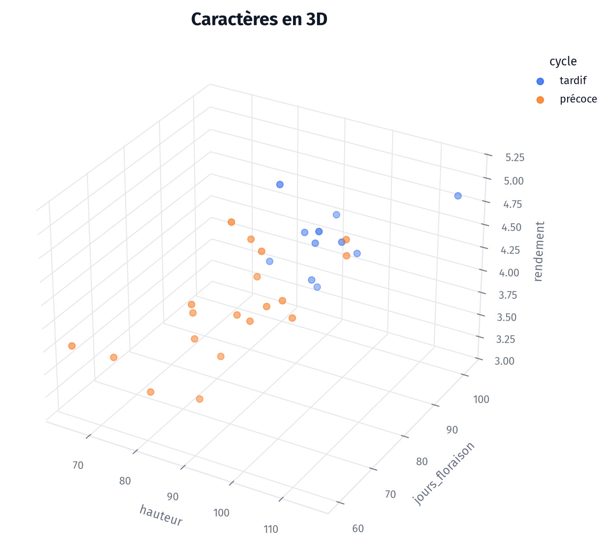
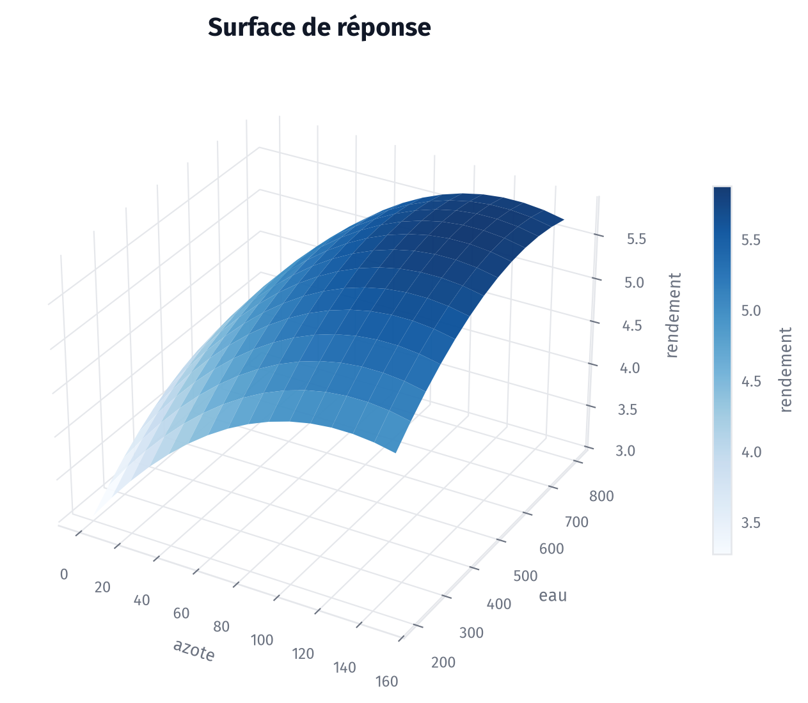
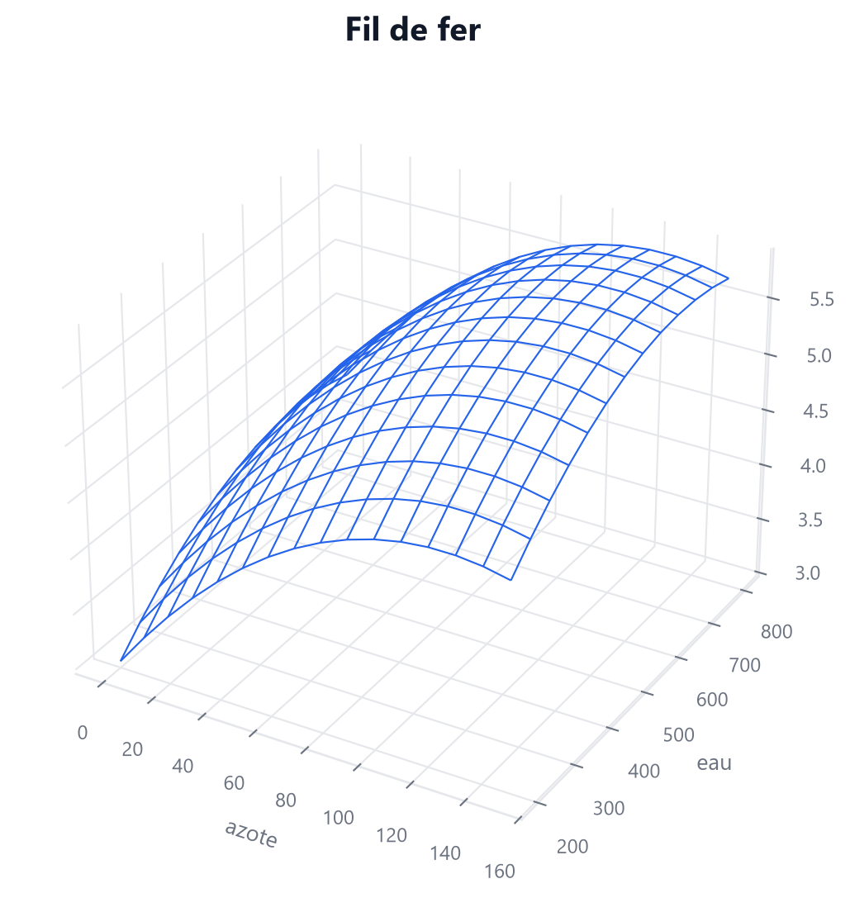
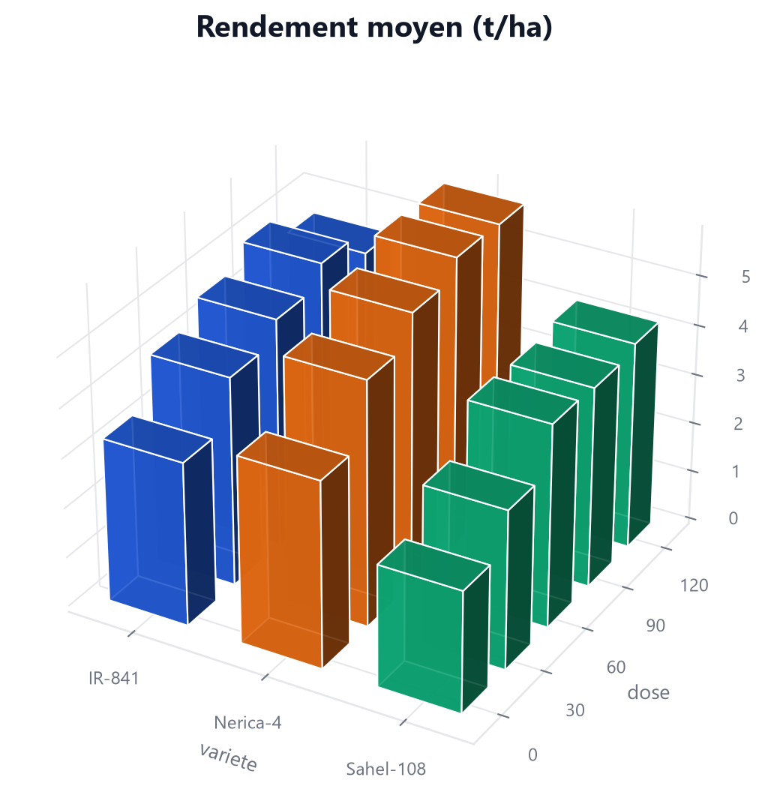

(Chart(caracteres, figsize=(8, 6.5))
.scatter3d('hauteur', 'jours_floraison', 'rendement', group='cycle')
.title('Caractères en 3D')
.show())
Nuages, courbes, surfaces et barres en trois dimensions.
Tous les exemples utilisent le thème editorial ; chaque graphique suit le thème actif (set_theme(...)). Retour à la galerie.
scatter3d — Nuage de points 3DNuage de points en trois dimensions, coloré par groupe.
Quand l’utiliser. Explorer la relation entre trois variables numériques ; à réserver à l’exploration (la lecture précise en 3D est difficile).
Données attendues : un DataFrame, une ligne par individu.
| Colonne (exemple) | Type | Rôle | Exemple de valeur |
|---|---|---|---|
hauteur |
nombre | x |
118 |
jours_floraison |
nombre | y |
92 |
rendement |
nombre | z |
4.9 |
cycle |
texte | group (optionnel) |
Précoce |
Paramètres
| Paramètre | Défaut | Description |
|---|---|---|
x |
obligatoire | Colonne de l’axe horizontal. |
y |
obligatoire | Colonne de l’axe vertical. |
z |
obligatoire | Colonne de la troisième dimension (hauteur, valeur). |
group |
None |
Colonne de regroupement : une couleur (et une entrée de légende) par groupe. |
size |
30 |
Taille des points. |
alpha |
0.8 |
Opacité, de 0 (transparent) à 1 (opaque). |
Exemple
(Chart(caracteres, figsize=(8, 6.5))
.scatter3d('hauteur', 'jours_floraison', 'rendement', group='cycle')
.title('Caractères en 3D')
.show())
line3d — Courbe 3DCourbe en trois dimensions (trajectoire), une par groupe.
Quand l’utiliser. Trajectoires dans l’espace (vol, déplacement d’un animal, trajectoire d’état).
Données attendues : un DataFrame, une ligne par position, dans l’ordre du parcours.
| Colonne (exemple) | Type | Rôle | Exemple de valeur |
|---|---|---|---|
x |
nombre | x |
1.2 |
y |
nombre | y |
-0.4 |
altitude |
nombre | z |
25.6 |
Paramètres
| Paramètre | Défaut | Description |
|---|---|---|
x |
obligatoire | Colonne de l’axe horizontal. |
y |
obligatoire | Colonne de l’axe vertical. |
z |
obligatoire | Colonne de la troisième dimension (hauteur, valeur). |
group |
None |
Colonne de regroupement : une couleur (et une entrée de légende) par groupe. |
Exemple
t = np.linspace(0, 6 * np.pi, 300)
vol = pd.DataFrame({'x': np.cos(t) * t, 'y': np.sin(t) * t, 'altitude': 20 + 2 * t})
(Chart(vol, figsize=(8, 6.5))
.line3d('x', 'y', 'altitude')
.title('Trajectoire de vol')
.show())
surface — Surface 3DSurface 3D de z selon (x, y) : maillage plein ou fil de fer sur une grille, surface triangulée sur des points dispersés.
Quand l’utiliser. Surfaces de réponse (rendement selon deux facteurs), relief, fonctions de deux variables.
Données attendues : un DataFrame, une ligne par point (x, y).
| Colonne (exemple) | Type | Rôle | Exemple de valeur |
|---|---|---|---|
azote |
nombre | x |
60 |
eau |
nombre | y |
400 |
rendement |
nombre | z : hauteur de la surface |
4.8 |
Paramètres
| Paramètre | Défaut | Description |
|---|---|---|
x |
obligatoire | Colonne de l’axe horizontal. |
y |
obligatoire | Colonne de l’axe vertical. |
z |
obligatoire | Colonne de la troisième dimension (hauteur, valeur). |
kind |
'surface' |
‘surface’, ‘wireframe’ (fil de fer) ou ‘trisurf’ (points dispersés) ; choisi automatiquement si besoin. |
cmap |
None |
Palette de couleurs continue (nom matplotlib). None : celle du thème. |
colorbar |
True |
Affiche l’échelle de couleurs. |
Exemple
Sur une grille régulière : kind='surface' ou 'wireframe' ; sur des points dispersés, la surface est triangulée (trisurf) automatiquement.
(Chart(reponse, figsize=(9, 6.5))
.surface('azote', 'eau', 'rendement')
.title('Surface de réponse')
.show())
(Chart(reponse, figsize=(9, 6.5))
.surface('azote', 'eau', 'rendement', kind='wireframe')
.title('Fil de fer')
.show())
bar3d — Barres 3DBarres en 3D : une barre de hauteur z pour chaque couple (x, y), catégories acceptées.
Quand l’utiliser. Présenter un tableau croisé à deux facteurs (variété × dose) de façon visuelle ; pour une lecture précise, préférer pivot_heatmap.
Données attendues : un DataFrame, une ligne par couple (x, y).
| Colonne (exemple) | Type | Rôle | Exemple de valeur |
|---|---|---|---|
variete |
texte ou nombre | x |
IR-841 |
dose |
texte ou nombre | y |
60 |
rendement |
nombre | z : hauteur |
4.7 |
Paramètres
| Paramètre | Défaut | Description |
|---|---|---|
x |
obligatoire | Colonne de l’axe horizontal. |
y |
obligatoire | Colonne de l’axe vertical. |
z |
obligatoire | Colonne de la troisième dimension (hauteur, valeur). |
alpha |
0.9 |
Opacité, de 0 (transparent) à 1 (opaque). |
Exemple
moyennes = essai.groupby(['variete', 'dose'], as_index=False)['rendement'].mean()
(Chart(moyennes, figsize=(9, 6.5))
.bar3d('variete', 'dose', 'rendement')
.title('Rendement moyen (t/ha)')
.show())